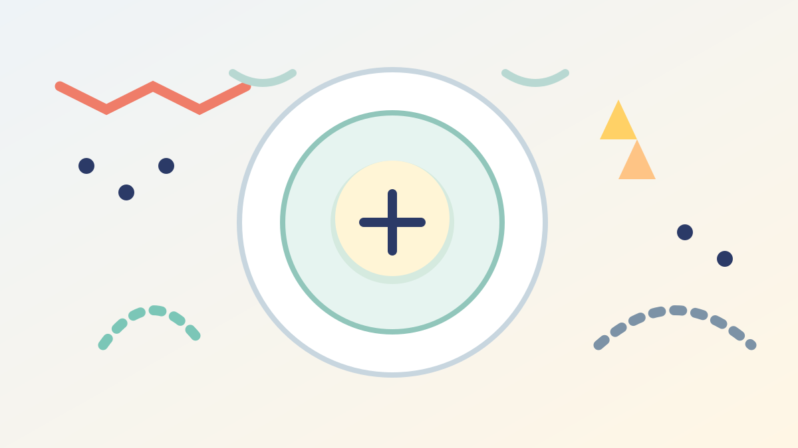
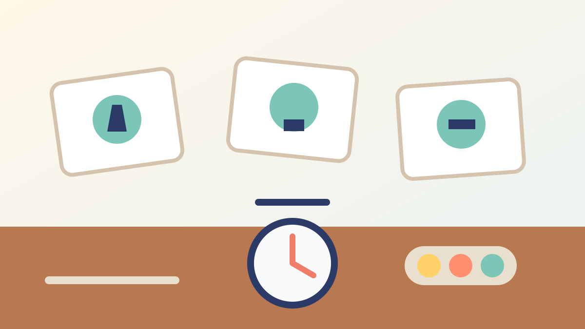
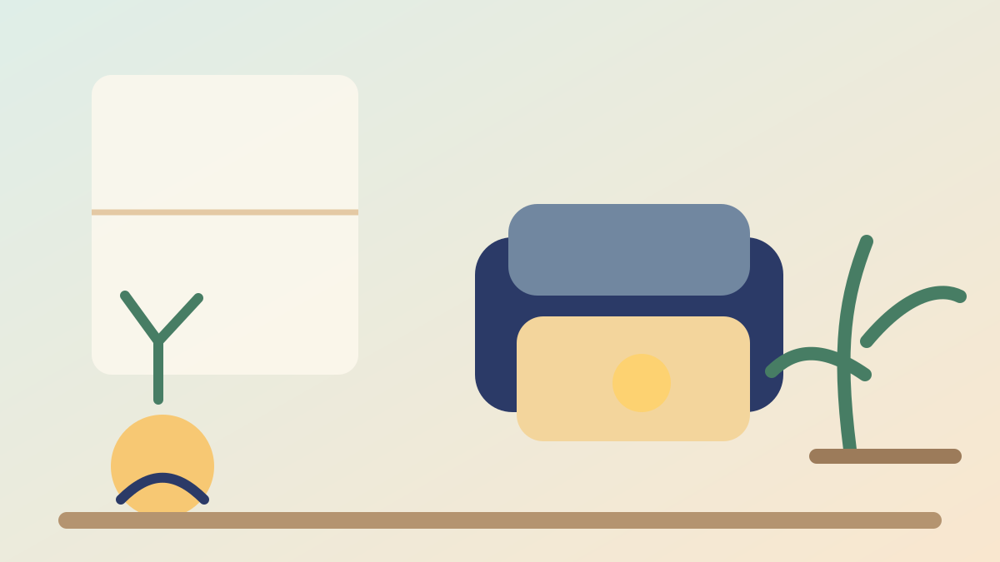

Cara mengatasi tantrum anak autis dimulai dari memahami penyebabnya, bukan sekadar menghentikan suara atau gerakan. Saat anak kewalahan, utamakan keselamatan, kurangi rangsangan, beri ruang, gunakan komunikasi singkat, dan tunggu sampai anak pulih. Setelah itu, catat pemicu dan bangun dukungan seperti rutinitas visual, pilihan komunikasi, jeda sensorik, serta rencana transisi yang sesuai kebutuhan anak.
Orang tua sering memakai kata “tantrum” untuk berbagai situasi: menangis keras, berteriak, menjatuhkan diri, memukul, menggigit, melarikan diri, atau menolak berinteraksi. Pada anak autis, perilaku tersebut dapat menjadi tanda bahwa tuntutan lingkungan sudah melampaui kemampuan anak untuk memproses informasi, mengatur tubuh, atau menyampaikan kebutuhan.
Karena itu, pertanyaan yang membantu bukan hanya “bagaimana menghentikannya?”, melainkan “apa yang terlalu berat bagi anak saat itu?” Panduan ini tidak menggantikan diagnosis atau rencana terapi. Isinya adalah langkah pendampingan sehari-hari yang dapat dibicarakan bersama dokter, psikolog, terapis, guru, dan keluarga.
Daftar Isi
Tantrum Anak Autis Tidak Selalu Sama dengan Meltdown
National Autistic Society menjelaskan bahwa meltdown adalah respons intens ketika seseorang autis benar-benar kewalahan oleh situasi. Responsnya dapat berupa berteriak, menangis, menendang, memukul, menggigit, atau kehilangan kemampuan untuk merespons. Ini berbeda dari tantrum yang sering kali memiliki tujuan tertentu, misalnya meminta benda atau menghindari tugas. Namun, orang luar tidak selalu dapat membedakan keduanya hanya dari penampilan, sehingga konteks dan pola sebelum kejadian sangat penting.
Seorang anak juga bisa mengalami shutdown: menjadi sangat diam, menutup telinga, memalingkan wajah, bersembunyi, atau tidak mampu menjawab. Diam tidak selalu berarti anak baik-baik saja. Baik meltdown maupun shutdown dapat muncul setelah beban sensorik, sosial, emosi, atau komunikasi menumpuk.
Hindari label seperti “nakal”, “manipulatif”, atau “cari perhatian” sebelum penyebabnya dipahami. Mengenal autisme membantu keluarga melihat bahwa cara anak merespons lingkungan dapat berbeda. Tujuannya bukan memaksa anak terlihat seperti anak lain, melainkan membuat lingkungan dan komunikasi lebih mudah diakses.
Langkah Saat Anak Sedang Kewalahan
1. Pastikan keselamatan lebih dulu
Jauhkan benda tajam, panas, mudah pecah, atau berat dari jangkauan. Tutup akses ke jalan, tangga, dan tempat berbahaya. Minta orang lain memberi jarak agar ruangan tidak semakin ramai. Bila ada risiko cedera serius pada anak atau orang lain, hubungi bantuan darurat setempat dan ikuti rencana keselamatan yang sudah disusun bersama profesional.
Jangan mengepung, mengejar, mengguncang, atau menahan anak sebagai hukuman. Penahanan fisik bukan teknik disiplin. Jika tindakan keselamatan memang dibutuhkan dalam situasi krisis, prosedurnya harus berasal dari tenaga terlatih dan memperhatikan hak serta kondisi anak.
2. Kurangi informasi yang masuk
Matikan musik, turunkan volume suara, redupkan lampu, dan minta orang di sekitar tidak berbicara bersamaan. Bila anak biasa memakai pelindung telinga, benda pengatur sensori, atau sudut tenang, tawarkan tanpa memaksa. Jangan menambahkan banyak instruksi, pertanyaan, atau nasihat saat otak anak sedang kewalahan.
3. Gunakan kalimat pendek dan beri waktu
Ucapkan satu pesan sederhana, misalnya “Kamu aman”, “Ayah di sini”, atau “Kita ke tempat tenang”. Setelah itu berhenti sejenak. Anak mungkin membutuhkan waktu lebih lama untuk memproses suara. Jangan menuntut kontak mata, permintaan maaf, atau jawaban cepat. Jika komunikasi lisan sulit, gunakan gambar atau gestur yang sudah dikenali anak.
4. Tetap hadir dengan tenang
Orang dewasa yang panik dapat menambah intensitas suasana. Tarik napas, jaga suara tetap rendah, dan minta bantuan orang dewasa lain bila Anda mulai kewalahan. Menjaga ketenangan bukan berarti mengabaikan anak. Artinya, Anda memberi sinyal bahwa situasi dapat dilalui tanpa mempermalukan atau menyalahkan anak.

Cara Mencari Pemicu Tantrum atau Meltdown
Setelah anak pulih, buat catatan singkat selama beberapa hari atau minggu. Catat apa yang terjadi sebelum, selama, dan sesudah kejadian. Pola yang tampak dapat membantu keluarga membedakan pemicu utama dari kejadian yang kebetulan berbarengan.
- Sensorik: suara keras, cahaya terang, kerumunan, sentuhan tertentu, bau, suhu, atau pakaian yang tidak nyaman.
- Perubahan: jadwal bergeser, rute berbeda, guru pengganti, kegiatan favorit selesai, atau transisi mendadak.
- Komunikasi: anak tidak punya cara yang mudah untuk meminta minum, berhenti, istirahat, bantuan, atau benda tertentu.
- Kebutuhan tubuh: lapar, haus, kurang tidur, nyeri, sembelit, demam, atau efek obat.
- Tuntutan dan kecemasan: instruksi terlalu panjang, tugas terlalu sulit, ruang sosial tidak dapat diprediksi, atau pengalaman buruk sebelumnya.
Catatan ini bukan alat untuk menyalahkan anak maupun orang tua. Fungsinya seperti peta. Jika kejadian sering muncul saat berpindah aktivitas, dukungan transisi mungkin perlu diperbaiki. Jika selalu muncul di ruangan bising, penyesuaian sensorik layak dicoba. Bila perilaku berubah tiba-tiba, periksa kemungkinan masalah kesehatan terlebih dahulu.
Cara Mencegah Kejadian Berikutnya
Buat rutinitas yang bisa dilihat
Rutinitas visual dapat menunjukkan urutan kegiatan dengan foto, gambar, simbol, tulisan, atau benda nyata. Mulai dari dua sampai empat langkah yang benar-benar dipakai, misalnya “sepatu”, “mobil”, “sekolah”, lalu “pulang”. Beri tanda ketika satu kegiatan selesai dan tunjukkan langkah berikutnya. Penjelasan lebih lengkap tentang alat ini dapat dibaca dalam panduan jadwal visual anak autis.
Jadwal bukan janji bahwa semua hal akan berjalan sempurna. Saat ada perubahan, tambahkan simbol “berubah”, tunjukkan apa yang tetap sama, dan beri waktu persiapan. Timer visual dapat membantu transisi, tetapi jangan digunakan untuk mempercepat anak yang sedang jelas-jelas kewalahan.
Ajarkan cara meminta sebelum krisis
Anak mungkin perlu cara untuk mengatakan “berhenti”, “terlalu ramai”, “sakit”, “mau minum”, atau “butuh istirahat”. Bentuknya dapat berupa ucapan, gestur, kartu, papan pilihan, tulisan, atau perangkat komunikasi. Latih saat anak tenang, bukan pertama kali ketika meltdown sudah berlangsung. Terapi wicara dapat membantu keluarga memilih dukungan komunikasi yang sesuai.

Sesuaikan lingkungan, bukan hanya perilaku
NICE merekomendasikan penyesuaian lingkungan fisik untuk anak autis, termasuk dukungan visual, ruang pribadi, serta perhatian pada sensitivitas terhadap cahaya, tingkat kebisingan, warna, dan perabot. Di rumah, perubahan kecil dapat berupa menyediakan tempat duduk di sudut yang lebih tenang, mengurangi barang yang berantakan, atau memberi pilihan aktivitas tanpa suara.
Di sekolah, guru dan pendamping dapat menyepakati tanda awal, kartu istirahat, tempat menenangkan diri, urutan tugas, serta cara kembali ke pelajaran. Pendekatan pendidikan inklusi sebaiknya disusun bersama keluarga dan anak. Baca juga penjelasan tentang pendidikan inklusi serta peran orang tua dalam pendidikan inklusi.
Siapkan rencana transisi
Sebelum pergi ke tempat baru, tunjukkan foto tempat, ceritakan urutan kegiatan, dan siapkan benda yang membantu anak merasa aman. Beri pilihan terbatas, misalnya “mau duduk di dekat pintu atau di dekat jendela?” Pilihan seperti ini bukan berarti anak mengendalikan semua hal. Anak mendapatkan sedikit kendali yang dapat mengurangi ketidakpastian.
Setelah Anak Mulai Tenang
Pemulihan dapat memerlukan waktu. Beri akses ke air minum, makanan bila memang lapar, ruang tenang, tidur, atau aktivitas yang menenangkan. Jangan langsung mengadakan sesi panjang untuk membahas kesalahan. Anak mungkin belum mampu mengingat atau menjelaskan kejadian secara runtut.
Saat kondisi sudah stabil, gunakan bahasa netral: “Tadi suaranya terlalu ramai, lalu kamu menutup telinga. Lain kali kita coba kartu istirahat.” Fokus pada kebutuhan dan rencana, bukan rasa malu. Jika anak ingin membicarakan perasaannya, dengarkan tanpa memaksa. Catat strategi yang membantu dan yang tidak membantu, lalu bagikan dengan guru atau terapis.

Kapan Perlu Bantuan Profesional?
Diskusikan dengan dokter anak, psikolog klinis anak, psikiater anak, terapis okupasi, terapis wicara, atau tim sekolah jika kejadian semakin sering, berlangsung lama, menyebabkan cedera, membuat anak tidak dapat tidur atau bersekolah, atau muncul bersamaan dengan perubahan makan, nyeri, demam, kejang, dan penurunan kemampuan yang mendadak.
Jangan membeli atau menghentikan obat, suplemen, diet khusus, atau terapi hanya karena rekomendasi media sosial. CDC menjelaskan bahwa dukungan autisme dapat berlangsung di rumah, sekolah, layanan kesehatan, dan komunitas, serta dapat mencakup pendekatan perilaku, perkembangan, pendidikan, komunikasi, dan okupasi. Pilihan harus disesuaikan dengan tujuan anak dan dievaluasi bersama profesional.
Catatan keselamatan
Jika anak berisiko melukai diri, melukai orang lain, menelan benda, melarikan diri ke jalan, atau mengalami gejala medis akut, prioritaskan bantuan darurat setempat. Rencana krisis tertulis yang dibuat bersama tenaga profesional lebih aman daripada improvisasi saat semua orang sedang panik.
FAQ Cara Mengatasi Tantrum Anak Autis
Apakah semua tantrum pada anak autis berarti meltdown?
Tidak. Ada anak yang meminta sesuatu, menghindari tugas, mengalami frustrasi komunikasi, atau memang sedang kewalahan. Amati konteks, tanda awal, dan apa yang terjadi setelah perilaku. Jangan membuat kesimpulan dari satu kejadian.
Apakah anak harus langsung diberi apa yang diminta?
Tidak selalu. Pertama, pastikan kebutuhan keselamatan dan kesehatan. Setelah anak tenang, ajarkan cara meminta dan buat batas yang konsisten. Mengubah semua aturan di tengah krisis dapat membuat situasi makin tidak jelas; memaksa aturan secara keras juga dapat memperburuk beban.
Apakah suara lembut selalu membantu?
Suara lembut sering lebih mudah diproses, tetapi kebutuhan anak berbeda. Sebagian anak justru membutuhkan lebih sedikit suara dan lebih banyak ruang. Perhatikan respons anak, kurangi kata-kata, dan gunakan strategi yang pernah terbukti membantu.
Bagaimana menjelaskan kejadian kepada saudara atau teman sekelas?
Gunakan penjelasan sederhana dan tidak mempermalukan anak, misalnya “Tadi tubuhnya terlalu penuh dengan suara dan perubahan, jadi ia perlu ruang tenang.” Ajarkan teman untuk tidak menonton, mengejek, atau menyentuh anak tanpa izin. Privasi anak tetap harus dijaga.
Apakah terapi dapat menghilangkan semua meltdown?
Tidak ada janji yang bertanggung jawab untuk menghilangkan semua kejadian. Dukungan yang tepat dapat membantu anak berkomunikasi, mengenali kebutuhan, mengembangkan keterampilan, dan membuat lingkungan lebih ramah. Target yang baik adalah keselamatan, kualitas hidup, partisipasi, dan kemandirian yang bermakna bagi anak.
Penutup
Cara mengatasi tantrum anak autis bukan lomba untuk membuat anak segera diam. Langkah yang lebih membantu adalah memahami fungsi perilaku, menjaga keselamatan, mengurangi beban saat krisis, lalu membangun dukungan sebelum kejadian berikutnya. Dengan catatan yang rapi dan kerja sama keluarga, sekolah, serta profesional, strategi dapat dibuat semakin personal dan realistis.
YUKA Indonesia mendukung pendidikan inklusi yang menghargai kebutuhan dan martabat setiap anak. Untuk pertanyaan tentang program pendampingan, silakan kunjungi halaman program YUKA atau hubungi tim kami. Informasi tentang layanan tidak menggantikan pemeriksaan dan nasihat tenaga kesehatan.